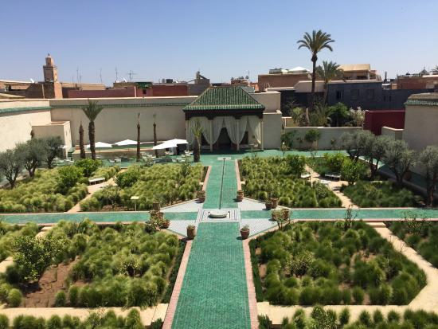
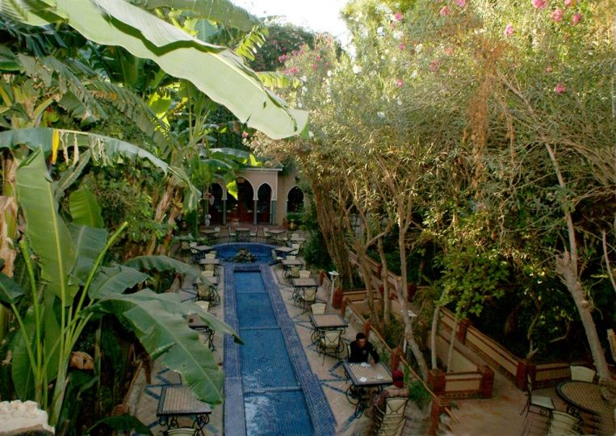
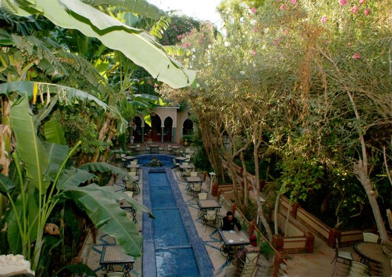

Ubicación: actual Irak. Fecha de construcción: 600 a.C. Altura: 24 m. Área: 120 m² Estado: desaparecidos.
Los Jardines Colgantes de Babilonia pudieron haber sido construidos hacia el año 600 a.C., en tiempos del rey Nabucodonosor II. El rey los encargó para su esposa, Amitis, quien extrañaba la tierra montañosa de donde provenía. Entonces, el rey ordenó construir una estructura tipo montaña que le hiciera sentir en casa..
Los relatos son muy diferentes entre sí. Todos concuerdan en que la obra tenía diversas terrazas o galerías con jardines, entre las cuales penetraba la luz de manera muy singular. Es probable que haya tenido unos 120 metros cuadrados en su base, y una altura aproximada de 24 metros.
 
